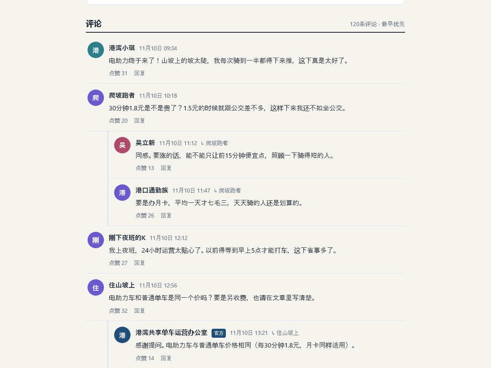
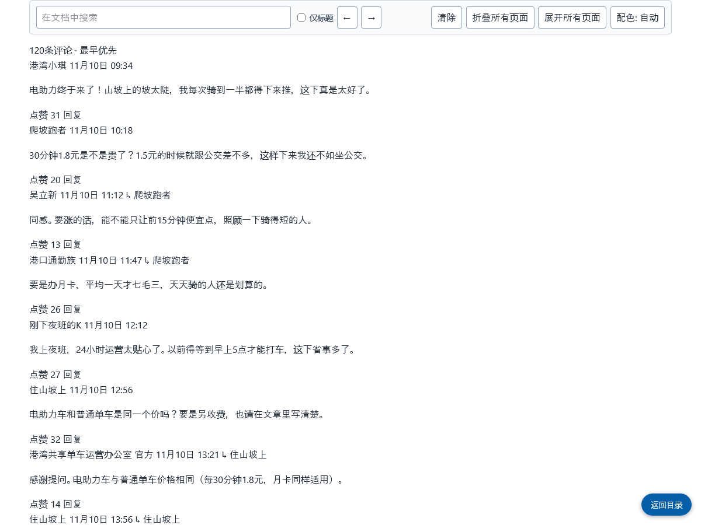

Grab All Files 的真实输出
把评论区加载到底并保存为一个 HTML 的结果（免费版）
一个向下滚动才会继续加载的虚构评论区（约 120 条，含回复），只保存了当前打开的这一页。扩展会自动把页面滚动到底，把加载出来的 120 条评论全部合并到一个 HTML 文件里。外观选的是“整理为易读格式”，因此保存的是统一格式的正文，而不是网站原本的设计。
输出文件
在相同窗口宽度下并排对比


制作方式
- 源页面
- /samples/source/zh_CN/comment-thread/
- 扩展程序
- Grab All Files（5.8.54 之后的版本，计划以 5.8.55 提交）
- 浏览器
- Firefox 160.0 (Windows 11, headless)
- 版本
- 免费版
- 制作日期
- 2026-11-16
- 设置
- 页面范围：仅当前页面
- 外观：整理为易读格式
- 保存形式：带目录和搜索的HTML